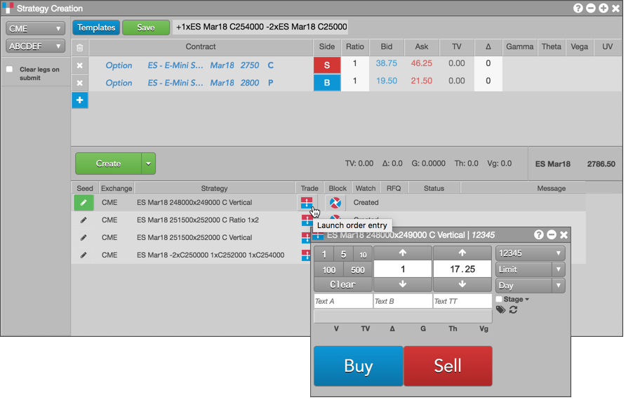

Using the Strategy Creation widget, you can submit an order for a user-defined strategy that appears in the execution report panel.
Tip: You can also drag-and-drop the created strategy from the execution report panel to a Market Grid or MD Trader widget to trade the strategy.
To trade a user-defined strategy:
Click the order entry widget icon in the Trade column in the execution report panel.

Note: The Strategy Creation widget uses the default floating order entry widget set in Preferences. You can right-click the icon or anywhere in that row to select an order entry window other than the default.
Tip: You can also click the RFQ column field for the strategy to send an RFQ to the market.
Set a quantity and price and select an account, order type, and order restriction (TIF).
Order types and restrictions vary by exchange. TT algos are also available for submitting an order for a strategy.